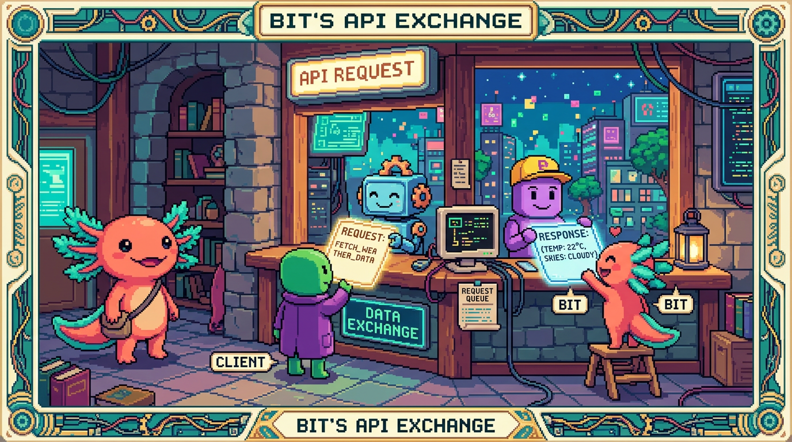

Capítulo 01 — ¿Qué es una API?

La palabra "API" suena a término de ingeniero, pero detrás hay una idea de lo más cotidiana. Una vez que la captas, empiezas a verlas por todas partes: son la forma en que los programas se piden cosas unos a otros. Y como ya entendiste el modelo cliente–servidor del Módulo 00, tienes media batalla ganada.
1. La idea: cómo dos programas se piden cosas
Piensa en un restaurante. Tú, que eres el cliente, no entras a la cocina a ponerte a cocinar: le dices al mesero qué quieres, él lleva tu pedido a la cocina y vuelve con el plato. El mesero es un intermediario, y trae consigo un menú con lo que puedes pedir y unas reglas de cómo pedirlo. Pues eso, ni más ni menos, es una API.
🟦 ¿Qué significa? — API
API significa Application Programming Interface ("interfaz de programación de aplicaciones"). Es un conjunto de reglas y "puntos de entrada" que un programa ofrece para que otros programas le pidan datos o acciones, sin necesidad de saber cómo funciona por dentro. En la analogía: el menú + el mesero. Tú pides del menú (las funciones disponibles) y recibes el plato (la respuesta), sin pisar la cocina (el código interno).
💡 Tip — Por qué las APIs lo cambian todo
Gracias a las APIs, tu app no tiene que resolverlo todo sola. ¿Necesitas mapas? Te apoyas en la API de Google Maps. ¿Pagos? La de Stripe. ¿IA? La de Claude. Te subes sobre el trabajo de otros, como quien ensambla bloques. Faro, por ejemplo, no "tiene" guardados tus repos: se los pide a la API de GitHub cada vez. Esa es la diferencia entre levantar todo desde cero y juntar piezas que ya funcionan.
2. APIs web y REST
Existen muchos tipos de API. La que más te vas a cruzar en la web es la API REST.
🟦 ¿Qué significa? — API web
Una API web es una API a la que se accede por internet, usando HTTP (Módulo 00). Tu app lanza una petición HTTP a una dirección y la API responde, casi siempre con datos en JSON (Módulo 03). En el fondo es, tal cual, el modelo cliente–servidor aplicado entre dos programas.
🟦 ¿Qué significa? — REST
REST es un estilo muy extendido para diseñar APIs web. No te agobies con la sigla; lo que importa es la idea de fondo: organizar la API alrededor de recursos (cosas como "usuarios", "repos", "proyectos"), darle a cada uno su dirección y usar los métodos HTTP que ya conoces (GET para leer, POST para crear, etc.). A una API que sigue ese estilo se le llama "RESTful".
🟦 ¿Qué significa? — Endpoint (punto de acceso)
Un endpoint es una dirección concreta de la API para una cosa específica. Por ejemplo, en la API de GitHub: -
https://api.github.com/users/Edhdez1→ tus datos de usuario. -https://api.github.com/users/Edhdez1/repos→ tus repositorios. Cada endpoint vendría a ser un "plato del menú". Combinas el endpoint (qué recurso quieres) con el método HTTP (qué quieres hacer con él).
3. Anatomía de una llamada a una API
Cuando tu app llama a una API, esa petición se compone de varias partes (y todas las viste ya por separado en módulos anteriores):
🟦 ¿Qué significa? — Las partes de una petición a una API
- URL/endpoint: a dónde (
https://api.github.com/users/Edhdez1).- Método: qué hacer (
GET,POST…).- Headers (cabeceras): información extra de la petición; aquí suele viajar la autenticación (tu clave/token) y el formato.
- Body (cuerpo): los datos que envías (en POST/PUT), normalmente en JSON.
- Respuesta: lo que devuelve la API: un código de estado (200, 404…) y un body con los datos en JSON.
🟦 ¿Qué significa? — Header (cabecera)
Un header es un par "nombre: valor" que acompaña a la petición o a la respuesta con metadatos: qué formato esperas, quién eres (autenticación), etc. Por ejemplo,
Authorization: Bearer TU_TOKENle dice a la API "soy yo, aquí tienes mi credencial". Lo verás en acción en el capítulo 02.
4. La documentación: el "menú" de cada API
🟦 ¿Qué significa? — Documentación de una API
Cada API publica su documentación: ese "menú" donde se explica qué endpoints tiene, qué métodos aceptan, qué hay que enviarles y qué devuelven. Saber leer la documentación de una API es una de las habilidades que más te va a servir: las APIs no se memorizan, se consultan. Cuando te toque usar una API nueva, lo primero que haces es buscar "[nombre] API docs".
🔎 En tu código
Faro tiene, en
src/app/api/, endpoints propios (es decir, su propia API) y, ensrc/lib/, código que consume APIs ajenas:github.ts(API de GitHub),google-drive.ts(API de Drive),openai.ts(API de OpenAI). Dicho de otro modo: Faro es cliente de unas APIs y a la vez servidor de la suya. Esas son las dos caras que vas a ir viendo a lo largo de este módulo.
✅ Checklist — ¿ya domino esto?
- [ ] Explico qué es una API con la analogía del restaurante (menú + mesero).
- [ ] Entiendo qué es una API web y, a grandes rasgos, el estilo REST.
- [ ] Sé qué es un endpoint (una dirección para un recurso).
- [ ] Reconozco las partes de una petición: URL, método, headers, body, respuesta.
- [ ] Sé qué es un header y que la autenticación suele ir ahí.
- [ ] Entiendo que se lee la documentación de cada API, no se memoriza.
🧪 Ejercicios
- La analogía. Explica con el restaurante qué representan: el menú, el mesero, la cocina y el plato, en términos de una API.
- Endpoints. Inventa dos endpoints REST para una API de una biblioteca (recursos: libros, autores). Di qué método HTTP usarías para "ver todos los libros" y para "agregar un libro".
- Partes. Para "crear un proyecto en Faro", ¿qué método HTTP sería y dónde irían los datos del proyecto (en qué parte de la petición)?
- Cliente y servidor. Explica la frase: "Faro es cliente de la API de GitHub y servidor de su propia API".
- 💻 Abre una API real. En el navegador, entra a
https://api.github.com/users/Edhdez1. Verás JSON crudo: esa es la respuesta de un endpoint GET, sin app de por medio.
➡️ Siguiente: Capítulo 02 — Consumir una API.